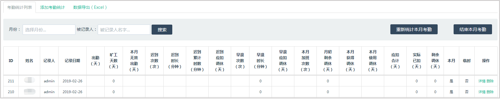

考勤统计列表
点击【月度统计】进入考勤统计列表的页面；

a.点击详情，查看员工本月考勤的详细信息；
b.点击删除，删除该员工的本月考勤信息。
可以使用月份和被记录人进行查询；
点击【结束本月考勤】，结束当月考勤，此时统计迟到、早退、请假、加班和旷工的天数，计入考勤，结束本月考勤之后就无法修改当月考勤了，需要点击【重新统计本月考勤】才可以继续修改。
添加考勤统计
点击【月度统计】进入考勤统计列表的页面，点击顶部【添加考勤统计】标签，进入考勤统计页面。当本月考勤结束以后，才能添加考勤统计。
数据导出
点击【月度统计】进入考勤统计列表的页面，点击顶部【数据导出】，可以导出考勤统计的Excel表格。